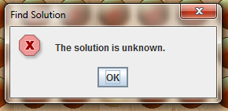
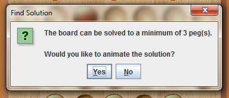
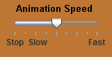
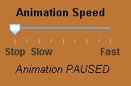

Find Solution
To find the best solution of the current board, click on the Find Solution button on the side panel to the right of the board.
The Find Solution button
The Find Solution feature always finds the best possible solution to the board. Similar to the hints, if a solution cannot be found within the waiting time, a message will be displayed indicating that the solution is unknown. The time spent finding a solution is also based on the Hint Wait Time.

The solution is unknown
If a solution is found within the waiting time, a message will pop up indicating the best possible solution; the message will display the minimum number of pegs that the board can be solved to. Afterwards, the player is asked to confirm whether or not the solution should be animated.

Message of confirmation
Animating the Solution
To view the animation, click Yes in the confirmation dialog. The solution of the animation is displayed in 3 steps for each move.
The following images display how solutions are animated:
A piece is highlighted

The piece is moved
The piece is un-highlighted
Animation Speed
The speed of an animation can be changed by using the slider on the side panel to the right of the board.
To increase the speed of an animation, drag the pointer to the right where “Fast” is indicated. The further right it is, the faster the animation. To reduce the speed of an animation, drag the pointer to the left where “Slow” is indicated. The further left it is, the slower the animation.

Changing the speed with the slider
To pause an animation, drag the pointer all the way to the left where “Stop” is indicated. To resume the animation afterwards, drag the pointer back to the appropriate speed.

Animation is paused